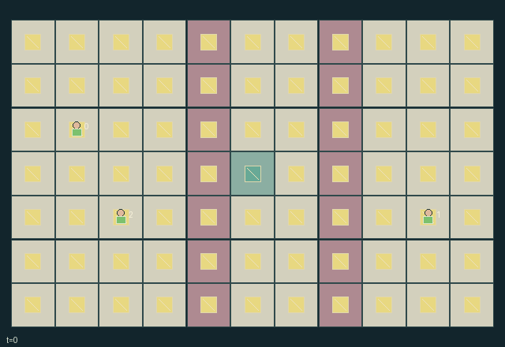

GI132 · Lightkeepers and Shared Shadow Corridors

Retrieve the three finite coded caches under real illumination and carry them to the central socket, while retaining safe shadow crossings and enough shared lamp charge. Cache owners have different delivery deadlines.
Identity and original contract
3 independently actionable roles; 13 discrete commands per role; 316 native observation columns per role; original horizon 128 steps. Declared per-step reward range: -1 to 5. Observation regime: partially_observable.
Source SHA-256: 00c7314e75f48ee9438cb033535b2a7ce28d8be8fe51f9d2f19f9152f6ea4f8e
The objective, rewards, population, map and horizon remain original. A preview is not a success claim.
Objective and gameplay
Retrieve the three finite coded caches under real illumination and carry them to the central socket, while retaining safe shadow crossings and enough shared lamp charge. Cache owners have different delivery deadlines.
Rotating or switching a shared lamp changes other roles illumination, native visibility, safe crossing and cache access. Shutters occlude real ray segments and walking, portable mirrors turn rays, and finite packs/socket stock fund future partner opportunities. Captures can repeat unless partners darken the occupied watched cell.
- Movement is simultaneous. Old occupied cells, duplicate destinations and closed shutters block entry.
- Near lamps, rotate clockwise or toggle power. Closed shutters stop both beams and entry. Each lamp emits at most twelve ray segments and pays one charge per emitting turn.
- Deployed slash and backslash mirrors redirect real beam segments; carried mirrors do not reflect. Mirror custody and conflicting device actions use cyclic role priority.
- Caches require a matching code and actual light for pickup. Codes and cargo records obey owner tracking, distance and illumination visibility.
- A lit watched corridor cell gives one exposure and two turns of stun, and drops carried cache cargo. Three exposures disable a role.
- Carry caches to the shared socket. Owners receive deadline bonuses, carriers and all roles receive delivery rewards. All displayed light cells come from the native ray computation.
Ending: All three caches delivered, or all roles have three exposures. Otherwise truncate after 128 live transitions. Stunned or disabled roles may only wait, but the episode can continue for partners.
Action timing: Every indexed intent is legal for a live capable role, even when its spatial/resource precondition fails; failed intents become deterministic no-ops. Out-of-range actions become wait. Terminal roles, and temporarily/incapacitated roles where specified, retain wait only. Masks do not leak private feasibility.
What this game explores
Information, sensing & communication: Who knows a fact, when it was measured, and whether it was communicated are separate state variables. Test memory or communication using only the same role-visible evidence.
Resource commons & externalities: An action changes a persistent resource or burden that another role also encounters. Compare extraction with maintenance and record the downstream resource trajectory.
Joint transport & shared access: Positions, load geometry, occupancy and persistent access constrain whose action can succeed next. Distinguish physical handoff, shared controls and simultaneous force from a cosmetic cooperation label.
These are questions supported by rule structure, not observed learning effects.
Play it: operating walkthrough
crucibles play --game gi132Keep Python running and open its printed address. Select this game, set a seed and press Create session. The game itself is always English.
Assign a role range to Host with Assign / take over, or Assign all roles. Invite a second participant with Create player invitation, then assign a disjoint subset. Every original role is available.
For every owned role choose a legal command and press Queue. Arrow keys / WASD queue a declared directional action for the current role camera when available. Space or Advance one joint step advances everyone together. Non-directional games use the selectors.
Unqueued roles use the labelled untrained uniform-legal policy. Take over or release roles before the next step without resetting. Full-state debug is privileged and permanently logged; role cameras preserve permissions. Close the session to retain logs. Server restart does not restore sessions.
Complete command reference
IDs and English labels exactly match the manifest. Availability depends on role, resources, location and phase. An available action can still have no productive effect.
0·Wait
1·Move north
2·Move east
3·Move south
4·Move west
5·Rotate nearby lamp clockwise
6·Toggle nearby lamp switch
7·Toggle nearby shutter
8·Pick up or deploy one portable mirror
9·Flip held or nearby mirror orientation
10·Charge nearby lamp or refill pack at socket
11·Enter code zero on a lit nearby cache
12·Enter code one on a lit nearby cache
Roles and capability identifiers
These original role names describe capabilities, not interchangeable skins. Check each owned role's legal selector before planning handoffs.
agent_0·Owner of west-to-east cache 0, deadline 32
agent_1·Owner of east-to-west cache 1, deadline 48
agent_2·Owner of northern relay cache 2, deadline 64
Information and observation permissions
Partial native observation. Geometry, wired devices, complete beam/shadow raster, socket stock, deadlines and alarm flags are public. Agents are visible within Manhattan distance two or when their cell is lit, plus self. Mirrors are visible by the same distance/light rule or to their carrier. Cache positions, code, status and carrier are visible within distance two, when lit, or to their same-index owner through its tracker. Unseen record fields are -1 and each record has its explicit role-specific visibility bit. No other-role mask rows enter that role observation.
The GIF is full-state debug and may reveal hidden entities or private state. Train on obs[agent], not the picture, state tree or another role's private row. Field slices and visibility are in the original manifest.
Reinforcement-learning integration
import jax
from crucibles_jaxmarl import make
env = make("gi132")
key = jax.random.PRNGKey(0)
key, rk, ak, sk = jax.random.split(key, 4)
obs, state = jax.jit(env.reset)(rk)
actions = env.sample_actions(ak, state)
obs, state, rewards, dones, info = jax.jit(env.step_env)(sk, state, actions)
done = dones["__all__"]Observations are float32 vectors of width 316; actions are scalar int32; masks have 13 entries. Supply all 3 roles each transition. Masked sampling is an engineering reference, not a trained learner.
step_env retains terminal data without reset. step performs outer autoreset and keeps terminal data in info["raw_state"] and info["raw_observation"]. Use dones["__all__"] for episode boundaries; separate completion, failure and time limit in analysis.
JIT or vmap equal identities and shapes. Split independent reset, policy and transition keys. Group different shapes explicitly; do not shrink the population or horizon. Host rendering stays outside training.
Training questions and fair evaluation
Define valid completion from the objective before fitting. Preserve original rewards and also report real deliveries/services, losses, resource state, unresolved episodes and per-role returns. Animation is not a reward signal.
Who knows a fact, when it was measured, and whether it was communicated are separate state variables. Test memory or communication using only the same role-visible evidence.
An action changes a persistent resource or burden that another role also encounters. Compare extraction with maintenance and record the downstream resource trajectory.
Positions, load geometry, occupancy and persistent access constrain whose action can succeed next. Distinguish physical handoff, shared controls and simultaneous force from a cosmetic cooperation label.
Compare memory, communication or centralized critics under matched actor information. Declare critic access; keep actor inputs role-filtered. Match partner/opponent distributions, masks, compute and checkpoint selection. Final tests never enter fitting or selection.
Independent training runs or source-pairing blocks are inferential units; episodes from one policy are not independent training replications. Save hashes, keys, versions, device, time and cost. Negative, zero, failed and indeterminate outcomes are valid. No trained checkpoint or target score is supplied.
Classification and evidence
Overlapping editorial labels are reading aids, not proof of novelty, difficulty, strategic equivalence or learning effects.
- Information, sensing & communication
- Evidence
manifest.task.observation_access: Partial native observation. Geometry, wired devices, complete beam/shadow raster, socket stock, deadlines and alarm flags are public. Agents are visible within Manhattan distance two or when their cell is lit, plus self. Mirrors are visible by the same distance/light rule or to their carrier. Cache positions, code, status and carrier are visible within distance two, when lit, or to their same-index owner through its tracker. Unseen record fields are -1 and each record has its explicit role-specific visibility bit. No other-role mask rows enter that role observation.
- Resource commons & externalities
- Evidence
manifest.task.objective: Retrieve the three finite coded caches under real illumination and carry them to the central socket, while retaining safe shadow crossings and enough shared lamp charge. Cache owners have different delivery deadlines.
- Joint transport & shared access
- Evidence
manifest.task.objective: Retrieve the three finite coded caches under real illumination and carry them to the central socket, while retaining safe shadow crossings and enough shared lamp charge. Cache owners have different delivery deadlines.
- Evidence
manifest.task.observation_access: Partial native observation. Geometry, wired devices, complete beam/shadow raster, socket stock, deadlines and alarm flags are public. Agents are visible within Manhattan distance two or when their cell is lit, plus self. Mirrors are visible by the same distance/light rule or to their carrier. Cache positions, code, status and carrier are visible within distance two, when lit, or to their same-index owner through its tracker. Unseen record fields are -1 and each record has its explicit role-specific visibility bit. No other-role mask rows enter that role observation.
- Evidence
scene.rules.1: Near lamps, rotate clockwise or toggle power. Closed shutters stop both beams and entry. Each lamp emits at most twelve ray segments and pays one charge per emitting turn.
Source, receipts and preview limits
The world-only English GIF replays saved untrained legal actions through the original kernel. At most 25 actual endpoints include initial and terminal state; no invented interpolation. It is full-state debug, not the role observation.
Original source, observation slices, manifest and mechanism
Native receipt · Presentation receipt
Engineering passes do not establish learning. Nonzero floating differences remain recorded and undetermined; no new tolerance was introduced. Human scores remain unverified.